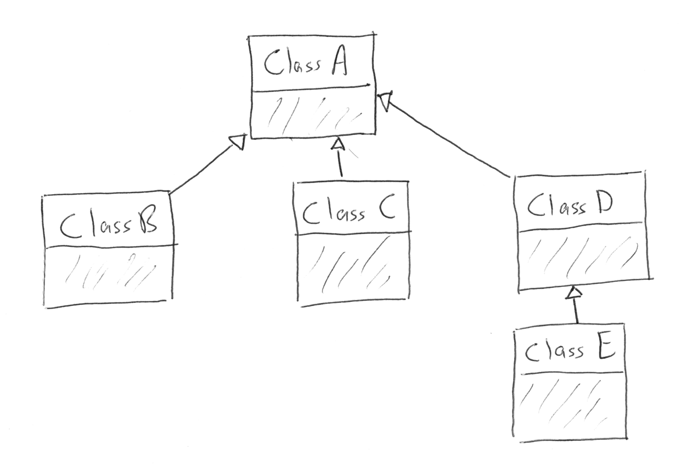

Classes and Objects: Inheritance
Inheritance is the second of the Three Pillars of Object-Oriented Programming that we will encounter.
From our Glossary, here's a definition:
Inheritance in Java
Inheritance in Java is very similar to the same concept in Python. We extend another class to inherit its data and behaviors (that is, fields, properties, and methods). Recall that in Python the syntax for inheritance was the following:
class Cat:
# ...code for the Cat class...
class HouseCat(Cat):
# ...code for the HouseCat class...Any fields and non-constructor methods in Cat would be available to each instance of HouseCat. We express the inheritance relationship in plain English by saying that a HouseCat extends Cat, or that a HouseCat is a Cat.
In Java, the syntax for extending a class requires a colon (:) separating the two class names.
public class Cat {
// ...code for the Cat class...
}
public class HouseCat extends Cat {
// ...code for the HouseCat class...
}We say that HouseCat is a subclass, derived class, or child class of Cat, and we say that Cat is the superclass, base class, or parent class of HouseCat. In Java, a class may extend only one class, but classes may extend each other in turn, creating hierarchies of classes. We often visualize these by drawing each class as a box, with an arrow pointing from the subclass to the base class.
The shaded portion of these boxes can include additional information about each class. We'll learn about what we might put here in the next lesson.
Inheritance is a useful mechanism for sharing data and behavior between related classes, and it effectively creates hierarchies of classes that have more and more specialized behavior as you go from base class to subclass.
When this happens, we can visualize the inheritance structure with a slightly more complex diagram.

As with Python, fields and non-constructor methods are directly available to instances of the subclass, subject to any access modifiers. In general, this means that private and default/package-private members of a base class are not accessible to a subclass.
For an example, let's revisit our Cat and HouseCat implementations from Chapter 14 of Unit 1, modified to illustrate some Java-specific concepts.
public class Cat {
private boolean tired = false;
private boolean hungry = false;
private double weight;
// The biological Family for all cat species
private String family = "Felidae";
public Cat (double aWeight) {
weight = aWeight;
}
/**** Getters and Setters ****/
public boolean isTired() {
return tired;
}
public void setTired(boolean aTired) {
tired = aTired;
}
public boolean isHungry() {
return tired;
}
public void setHungry(boolean aHungry) {
hungry = aHungry;
}
public double getWeight() {
return weight;
}
public void setWeight(double aWeight) {
weight = aWeight;
}
public String getFamily() {
return family;
}
/**** Instance Methods ****/
// A cat is rested and hungry after it sleeps
public void sleep() {
tired = false;
hungry = true;
}
// Eating makes a cat not hungry
public void eat() {
// eating when not hungry makes a cat sleepy
if (!hungry) {
tired = true;
}
hungry = false;
}
public void noise () {
return "Meeeeeeooooowww!";
}
}public class HouseCat extends Cat
{
private String name;
private String species = "Felis catus";
public HouseCat(String aName, double aWeight) {
super(aWeight);
name = aName;
}
public boolean isSatisfied() {
return !isHungry() && !isTired();
}
@Override
public void noise() {
return "Hello, my name is " + name + "!";
}
public String purr() {
return "I'm a HouseCat";
}
}The class HouseCat extends Cat, using several different inheritance features that we will explore in turn.
Notice that Cat has a private string field family, representing the biological family of all cats. This field is not directly accessible to HouseCat since it is private, however it may be read via the public getter getFamily. There is not setter for family, however, so it may only be set within Cat. It makes sense that the another class should not be able to change the biological family of a cat, since this field should rarely, if ever, change.
Methods of the base class Cat may be called on instances of the subclass HouseCat as if they were defined as part of the HouseCat.
HouseCat garfield = new HouseCat("Garfield", 12);
garfield.eat();The eat method was defined in Cat, but may be called on all HouseCat instances as well. We say: "HouseCat inherits the method eat from Cat."
Working With Constructors in Subclasses
We mentioned above that a subclass inherits all non-constructor methods from its base class. Indeed, when extending a class, we will not be able to create new instances of our subclass HouseCat using any constructors provided by Cat. For example, this code will not compile:
HouseCat thumper = new HouseCat(8.4);The base class Cat has a constructor that takes a single parameter of type double, but HouseCat does not have such a constructor, and Cat constructors are not inherited by HouseCat. If we wanted to use such a constructor in the subclass, we would have to explicitly provide it. We'll see how to do this relatively easily in a moment.
Let's look at the constructor included in HouseCat:
public HouseCat(String aName, double aWeight) {
super(aWeight);
name = aName;
}Here we use the super keyword to specify that our constructor should call the base class constructor with the argument aWeight. This call to the base class constructor must be the first line of our HouesCat constructor. This is a useful way to ensure that we're fully initializing our objects.
You may leave out such a call to a base class constructor only when the base class has a default, or no-arg, constructor (that is, a constructor that takes no arguments). In such a case, the default constructor is implicitly called for you. Here's what this would look like in HouseCat, if Cat had a default constructor.
public HouseCat(String aName) {
name = aName;
}Even though we don't explicitly specify that we want to call a constructor from Cat, the default constructor will be called (if it existed, which in this case it doesn't).
As a consequence of this constructor syntax, we can easily expose any constructor from the base class by providing a subclass constructor with the same signature and a body that only calls the base class constructor.
public HouseCat(double aWeight) {
super(aWeight);
}Overriding Base Class Behavior
Sometimes when extending a class, we'll want to modify behavior provided by the base class. This can be done by replacing the implementation of an inherited method by a completely new method implementation. For a given method, we can do this via method overriding.
In our example, the noise method of HouseCat overrides the method of the same name in Cat. When we override it, we should use the @Override annotation.
Here are the methods in question.
In Cat:
public String noise() {
return "Meeeeeeooooowww!";
}In HouseCat:
@Override
public String noise() {
return "Hello, my name is " + Name + "!";
}Here we override noise in HouseCat. If we have a HouseCat object and call its noise method, we will be using the method defined in HouseCat.
Cat plainCat = new Cat(8.6);
HouseCat garfield = new HouseCat("Garfield", 12);
System.out.println(plainCat.noise()); // prints "Meeeeeeooooowww!"
System.out.println(garfield.noise()); // prints "Hello, my name is Garfield!"When overriding a method, we may call the method from the base class that we're overriding by using super:
public String noise() {
if (isSatisfied()) {
return "Hello, my name is " + Name + "!";
} else {
return super.noise();
}
}This calls the overridden method in the base class via super.noise(), carrying out the original behavior if the given conditional branch is reached.
The Object Class
In a previous lesson, we introduced the "special" methods equals and toString, noting that all classes were provided default implementations of these methods that could be overridden.
In fact, these default methods are part of a class called Object. If a class does not explicitly extend another class, then it implicitly extends Object. So the default implementations of equals and toString (along with a few other methods) are made available to us via inheritance.
Abstract Classes and Methods
In this section we briefly introduce an intermediate object-oriented concept. We will not use it much in this course, but you're likely to encounter it in the "real world" and it is a useful one to know.
We noted in the introduction to this section that inheritance is a way to share behaviors among classes. You'll sometimes find yourself creating a base class as a way to share behaviors among related classes. However, in such situations is not always desirable for instances of the base class to be created.
For example, suppose we began coding two classes, HouseCat and Tiger. Upon writing the code, we realized that there was some common data and behaviors. For example, they both make a noise, come from the same biological family, and get hungry. In order to reduce code repetition, we combined those in Cat (as above).
public class Cat {
// Cat class definition
}
public class HouseCat extends Cat {
// HouseCat class definition
}
public class Tiger extends Cat {
// Tiger class definition
}In reality, though, we might not want objects of type Cat to be created, since such a cat couldn't actually exist (a real cat would have a specific genus and species, for example). We could prevent objects of type Cat from being created, while still enabling sharing of behavior among its subclasses, by making Cat an abstract class.
public abstract class Cat
{
// Cat class definition
}To reiterate, abstract classes are classes that may not be instantiated. In order to use the behavior of an abstract class, we must extend it.
We have a further tool that we may use here, which is an abstract method. An abstract method is a method in an abstract class that does not have a body. In other words, it does not have any associated code, only a signature. It must also be marked abstract.
In our abstract Cat class, it would make sense to make noise abstract to force any class extending it to provide its own implementation of that behavior.
public abstract class Cat {
public abstract String noise();
// More Cat class code...
}Any class extending Cat is then forced to provide its own version of noise, with the exact same method signature.
Data Typing And Inheritance
When one class extends another, as HouseCat extends Cat, a field or local variable of the type of the parent class may hold an object that is of the type of the child class.
In other words, this is allowed:
Cat suki = new HouseCat("Suki", 8);This is acceptable because a HouseCat is a Cat. Furthermore, when we call methods on such an object, the compiler is smart enough to determine which method it should call. For example, the following call to noise() will call the version defined in HouseCat:
// Calls HouseCat's noise() method
suki.noise();This only works for methods that are declared in the parent class, however. If we have a HouseCat object stored in a Cat variable or field, then it is not allowed to call methods that are only part HouseCat.
// Results in a compiler error, since Cat
// doesn't have such a method
suki.isSatisfied();Here, isSatistfied() is defined in HouseCat, and there is not a corresponding overridden method in Cat. If we were really, really sure that we had a Cat that was actually a HouseCat, we could call such a method by first casting:
// As long as suki really is a HouseCat, this works
((HouseCat) suki).isSatisfied();The danger here is that if suki is in fact not a HouseCat (it was declared only as a Cat, after all) then we'll experience a runtime exception. A runtime exception is an error that occurs upon running the program, and is not found by the compiler beforehand. These are dangerous, and situations where they might come up should be avoided. So you should only cast an object to another type when you are very sure that it's safe to do so.
Storing objects of one type (e.g. HouseCat) in a variable or field of another "compatible" type (e.g. Cat) is an example of polymorphism. We'll have more to say about polymorphism in a future lesson.